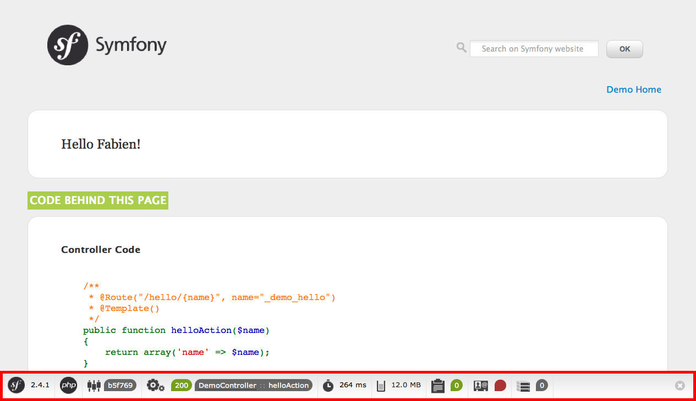
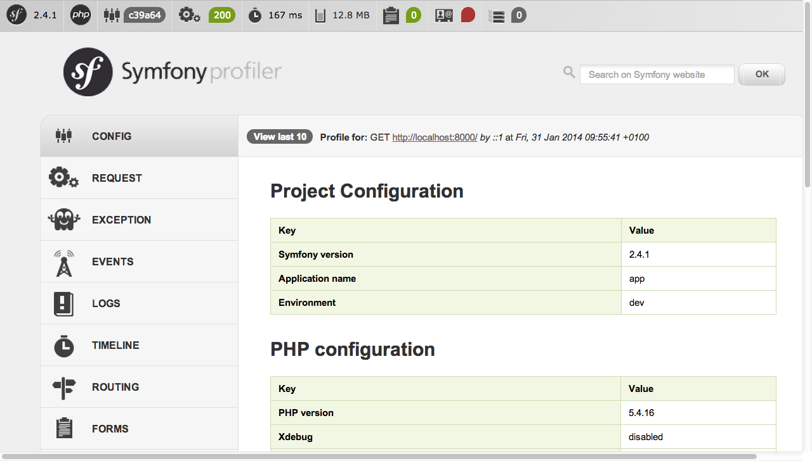

总览¶
请在十分钟内开始使用Symfony！这一章将引导您了解symfony背后最重要的概念，并通过向您展示一个简单的项目实践来解释如何快速入门。
如果您以前使用过一个web框架，那么您将会感觉像在symfony一样。如果不是，欢迎体验一个新的web应用程序开发方式。
本教程唯一的技术要求是电脑上有5.4或更高版本的PHP。 如果你使用PHP的集成包像WAMP、XAMP或MAMP，检查他们是否使用5.4或更新版本的PHP。 你也可以在终端或命令行工具中运行下面的命令来查看已经安装的PHP版本：
$ php --version安装Symfony¶
以往, 每个新项目都必须手动安装symfony。 现在你可以使用Symfony Installer，它必须在你第一次在计算机上使用Symfony的时候安装。
在Linux和MAC OS X系统上，运行下面命令：
$ curl -LsS http://symfony.com/installer > symfony.phar
$ sudo mv symfony.phar /usr/local/bin/symfony
$ chmod a+x /usr/local/bin/symfony
注解
如果你的系统上没有安装curl用下面命令代替：
$ php -r "readfile('http://symfony.com/installer');" > symfony.phar
$ sudo mv symfony.phar /usr/local/bin/symfony
$ chmod a+x /usr/local/bin/symfony
在安装Symfony installer后，你必须重新开启一个新的控制台窗口来执行新的symfony命令：
$ symfony在Windows系统中，运行下面命令：
c:\> php -r "readfile('http://symfony.com/installer');" > symfony.phar这个命令会下载一个名为symfony.phar的文件，其中包含Symfony installer。
保存或更多的文件到创建Symfony项目的目录，然后用下面的命令立即执行Symfony安装程序：
c:\> php symfony.phar创建你的第一个Symfony程序¶
在Symfony Installer设置之后，用new命令去创建一个Symfony项目。
让我们创建一个名为myproject的新项目：
# Linux and Mac OS X
$ symfony new myproject
# Windows
c:\> php symfony.phar new myproject
该命令下载最新的symfony稳定版本，并在myproject/目录下创建一个空项目，以便您可以立即开始开发应用程序。
运行Symfony¶
本教程将使用PHP内置的web server运行Symfony应用程序。因此，运行一个Symfony程序要进入到项目的目录并且运行下面这条命令：
$ cd myproject/
$ php app/console server:run
打开浏览器并访问http://localhost:8000链接，来查看Symfony的欢迎页

恭喜！你的第一个Symfony程序成功运行了！
注解
除了欢迎页，你或许会看到一个空白页或者一个错误页。这个是由目录权限错误配置引起的。 根据您的操作系统可能由几种解决方案。 所有的这些都在官方文档的设置权限部分解释。
当您完成Symfony项目的工作时，你可以使用server:stop命令关闭服务器。
$ php app/console server:stop小技巧
如果你比较喜欢传统服务器例如Apache或者Nginx，阅读Web服务器的配置这篇文章。
了解基本原理¶
框架的主要目标之一是保持你的代码的组织，并允许你的应用程序随着时间的推移避免混合数据库调用，html标签和其他的PHP代码在同一个脚本。要用Symfony实现这个目标，你首先需要学习一些基本概念。
当开发一个Symfony应用程序的时候，作为开发人员的职责就是编写将用户的请求（例如 http://localhost:8000/）映射到资源页面的代码（例如 Welcome to Symfony! HTML页面）。
要执行的代码在Action和控制器中定义。用户请求和服务器文件之间的映射的代码是通过路由配置文件来定义。并且浏览器中显示的内容通常通过模板来渲染。
当你浏览http://localhost:8000/之前，
Symfony执行定义在src/AppBundle/Controller/DefaultController.php中的控制器
并且渲染app/Resources/views/default/index.html.twig模板。
在下面的章节，您将详细学习Symfony控制器，路由和模板的内部运作。
Actions and Controllers¶
打开src/AppBundle/Controller/DefaultController.php文件并且你将看到下面的代码
（目前，别去理会@Route这些配置，因为他们会在下个章节解释。）
namespace AppBundle\Controller;
use Sensio\Bundle\FrameworkExtraBundle\Configuration\Route;
use Symfony\Bundle\FrameworkBundle\Controller\Controller;
class DefaultController extends Controller {
/**
* @Route("/", name="homepage")
*/
public function indexAction () {
return $this->render('default/index.html.twig');
}
}
在Symfony应用程序中，控制器一般是带Controller后缀名的PHP类。
在这个例子中，控制器命名为Default，并且PHP类命名为DefaultController。
定义在控制器中的方法叫Action，他们通常和应用程序的URL关联并且他们的名字以为Action后缀命名。
在这个方法中，这个Default控制器只有一个action叫index并定义为indexAction方法。
Action一般比较短，差不多10-15代码。因为他们只是调用应用程序的其他部分获取或生成需要的信息，然后渲染模板作为结果展示给用户。
在这个例子中，这个index Action实际上是空的，因为他不需要调用任何方法。这个action只是呈现一个带有Welcome to Symfony!内容的模板。
路由¶
Symfony通过将请求的url与应用程序配置的路径进行匹配来讲每个请求路由到处理他的操作。
再次打开src/AppBundle/Controller/DefaultController.php文件，看一看indexAction方法上面的3行代码：
// src/AppBundle/Controller/DefaultController.php
namespace AppBundle\Controller;
use Sensio\Bundle\FrameworkExtraBundle\Configuration\Route;
use Symfony\Bundle\FrameworkBundle\Controller\Controller;
class DefaultController extends Controller
{
/**
* @Route("/", name="homepage")
*/
public function indexAction(){
return $this->render('default/index.html.twig');
}
}
这三行代码通过@Route()注释来定义路由的配置。
PHP 注释是给一个方法配置路由的常规的方式，而不必编写普通的PHP代码。
注意，注释书以/**开头，而一般的PHP注释以/*开头。
@Route()的第一个值定义了可以使action执行的url。
您不必将应用程序的host添加到url(例如 http://example.com)，这些url总是相对的，通常被称之为路径。
在这种情况下，/指向应用程序的主页。
@Route()的第二个参数是可选的(例如 name="homepage")，设置路由的名称。
现在这个名字是不需要的，但是稍后对于链接页面非常有用
考虑到这一切，@Route("/",name="homepage")注释会创建一个名为homepage的新路由，当用户访问/这个路径的时候Symfony会执行Default控制器中的indexaction方法。
小技巧
除此之外，路由可以在ymal,xml或者php文件中配置，如symfony文档的路由章节所述。 这种灵活性是symfony的一个主要特征，他是一个从不向你强加特定配置格式的框架。
模板¶
index action的唯一内容就是这个PHP语句：
return $this->render('default/index.html.twig');
$this->render()方法是渲染模板的约定俗成的便捷的方式。
Symfony向任何继承Controller类的控制器提供了一些便捷的方法。
默认情况下，应用程序的模板都存储在app/Resources/views/文件夹下。
因此，default/index.html.twig对应app/Resources/views/default/index.html.twig文件。
打开这个文件你将看到下面代码：
{# app/Resources/views/default/index.html.twig #}
{% extends 'base.html.twig' %}
{% block body %}
<h1>Welcome to Symfony!</h1>
{% endblock %}
这个模板是用 Twig 创建的，他是一个为现代PHP应用程序创建的一个模板引擎。 这个教程的第二部分会介绍在Symfony中模板是如何工作的。
Working with Environments¶
现在您对Symfony的工作原理有了更好的了解，仔细看看Symfony渲染页面的底部。你应该注意到一个带有Symfony标志的小导航条。这是“Web Debug Toolbar”，Symfony开发者最好的助手。
但最初你仅仅看到的是冰山一角；点击任意部分打开分析器，并获取有关请求，查询参数，安全性详细信息和数据库查询的更多信息。
这个工具提供了关于您的应用程序太多的内部信息，您可能担心访问者访问敏感信息。Symfony意识到了这个问题，因此当应用程序在生产服务器上运行时，不会显示这个栏。
Symfony如何知道您的应用程序是在本地运行还是在生产服务器上运行。继续阅读，发现执行环境的概念。
什么是环境？¶
环境是一组用于运行应用程序的配置。
Symfony默认定义了两个环境：dev(适合在本地开发应用程序)和prod(在执行生产应用程序时进行了优化)。
当您在浏览器访问http://localhost:8000 网址时，你正在dev环境中执行你的应用程序。
在prod环境中访问你的应用程序，访问http://localhost:8000/app.php URL。
如果你喜欢在总是在url中显示dev环境，你可以访问http://localhost:8000/app_dev.php url。
环境的主要区别在于dev牺牲了应用程序的性能，可以为开发人员提供大量的信息。同时，prod为了提供更好的性能，禁用了Web Debug Toolbar和调试信息。
环境间的另一个区别是用于执行应用程序的配置项。
当你访问dev环境时，symfony加载app/config/config_dev.yml配置文件；
当你访问prod环境时，symfony加载app/config/config_prod.yml配置文件。
通常，环境间共享大量的配置选项。出于这个原因，你可以将公共配置项放到config.yml文件中，必要时在每个环境的配置文件中覆盖特定配置项。
# app/config/config_dev.yml
imports:
- { resource: config.yml }
web_profiler:
toolbar: true
intercept_redirects: false
在本例中，config_dev.yml配置文件导入公共配置文件config.yml，然后用自己的配置覆盖现有的Web Debug Toolbar的配置项。
有关环境的更多信息，请参阅“ Environments & Front Controllers”文章。
最终通过¶
恭喜！你已经第一次尝试Symfony代码。那不是那么难，不是吗？ 还有很多需要探索的东西，但是你应该已经看到Symfony是如何更好，更快地实现网站的。 如果您渴望学习更多关于Symfony的知识，请参阅下一节：”视图“